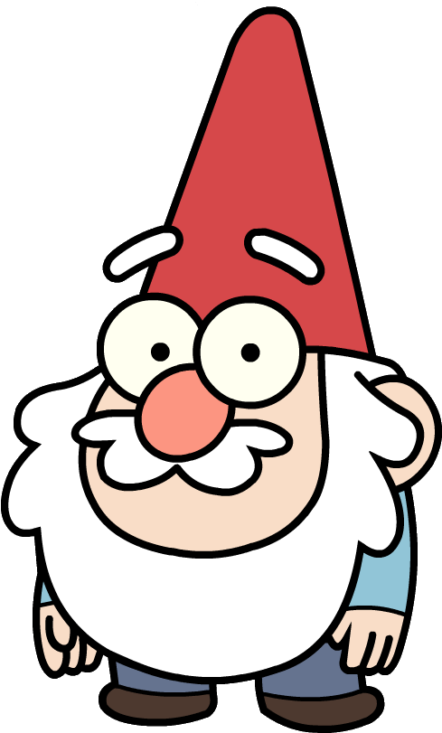
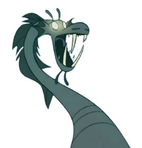
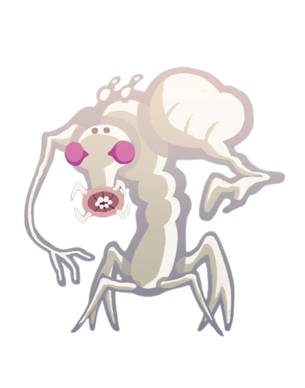

Gideon





Title
:
Bill Cipher - Entitas Berbahaya
Journal
:
2 & 3
Description :
PERINGATAN: Jangan pernah bernegosiasi dengan makhluk ini. Bill Cipher adalah iblis segitiga dari Nightmare Realm. Ia dapat memasuki mimpi, memanipulasi pikiran manusia, dan berniat memicu kiamat Weirdmageddon.